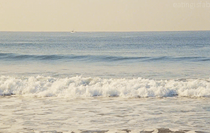
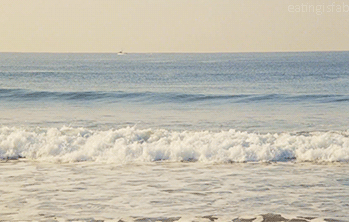
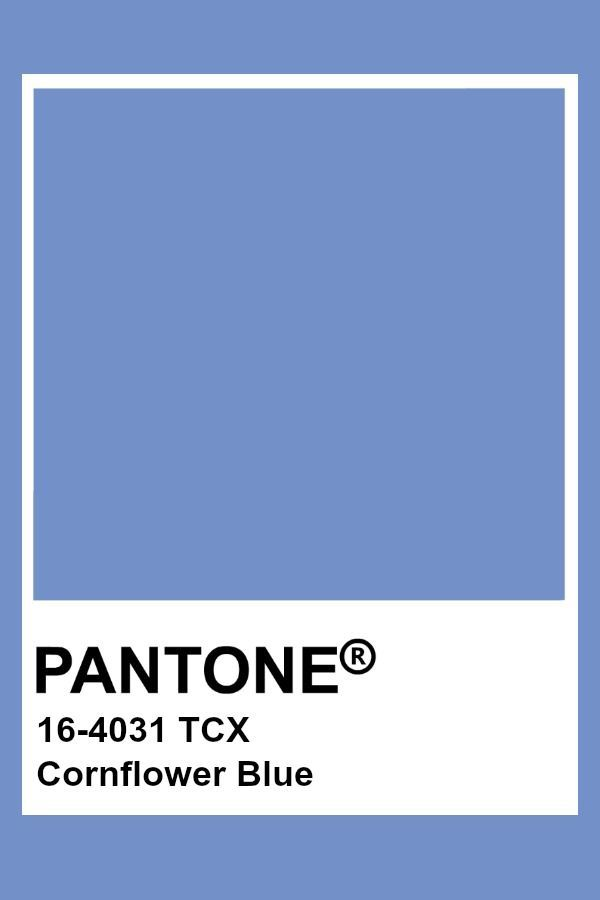
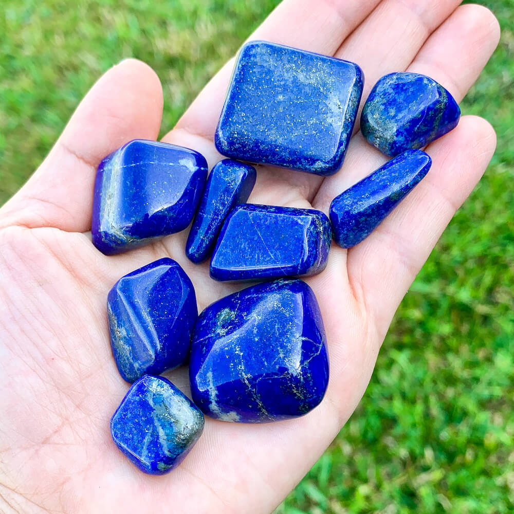

blue
blue represents both the sky and the sea and is associated with open spaces, freedom, intuition, imagination, inspiration, and sensitivity. Blue also represents meanings of depth, trust, loyalty, sincerity, wisdom, confidence, stability, faith, and intelligence..
 


Blue and particularly cornflower blue is associated with romantic hope and fidelity.

Lapis Lazuli, often referred to as the "wisdom keeper," is believed to possess the ability to enlighten the mind and lead to self-awareness.